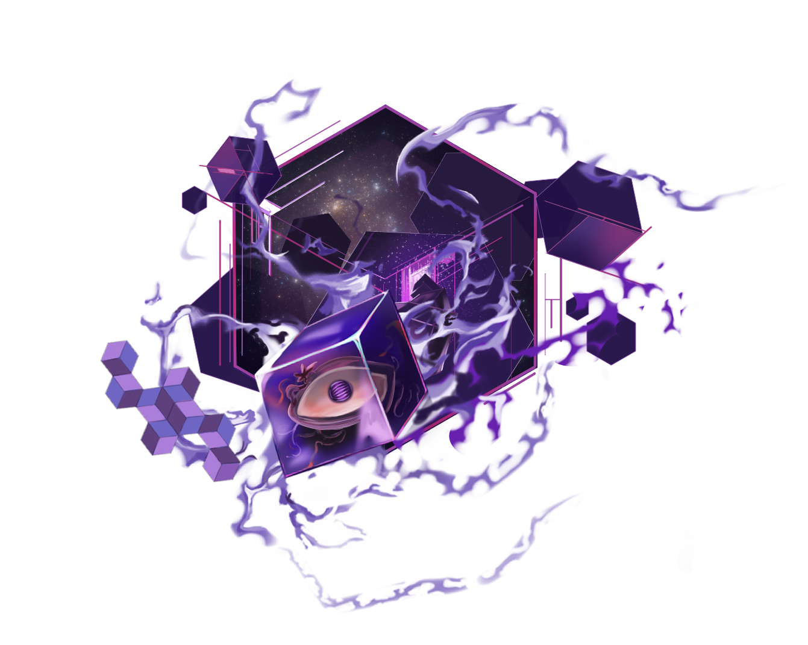

永夜海洋
位於裏世界極北的人類禁地。席拉姆尼消失在海域盡頭後，大量異獸開始從這一帶出現。
《艾爾芙卡》的主要劇情發生在裏世界。這裡的居民不知道表世界存在，也不知道那些持續入侵的異獸，其實來自表世界的智慧生命。正式版的故事，就從赤城北方忽然張開的巨型裂縫開始。

永夜海洋、卡爾維恩、赤城與洛瑟恩不是單純背景，它們共同解釋了各族群為什麼會走到今天這一步。
位於裏世界極北的人類禁地。席拉姆尼消失在海域盡頭後，大量異獸開始從這一帶出現。
南側海岸的巨大城市，也是抵禦入侵的第一道防線。潮汐之子的力量在這裡成為主戰力。
位於大陸偏南的封閉城市。席拉姆尼最早在此失控出現，也讓血族長期背負災禍源頭的污名。

卡爾維恩穩定發展十多年後，赤城突然探測到強烈裂縫反應。衝擊波震亂整座城市時，貝維塔已經在裂縫附近阻擋異獸，琉波則奉命帶著懸舵與獅鈴趕往北方支援，絳纓也在混亂中與前哨站接上通訊。
與海洋高度適應的族群，少數成員能操控水。前哨站的主力戰力，便出自這一脈。
居於赤城、壽命極長卻生育率低的族群。席拉姆尼事件後，整座城市逐漸封閉。
分散住在洛瑟恩外圍的部落族群，沒有統一國家，而是以無數部落形式生存。
洛瑟恩最危險的地帶之一。食肉植物與節肢掠食者能誘發幻覺，讓獵物自己走入陷阱。
席拉姆尼最早在赤城的召喚儀式中失控出現，之後一路穿過洛瑟恩，最終消失於永夜海洋盡頭。從那之後，異獸開始大量現身，而鳴扉獸則成了能夠打開裂縫的高危存在。
在正式版的艾爾芙卡裡，世界不是先交代完才開始動，而是從裂縫張開的那一刻就逼著每個陣營立刻做出選擇。
世界觀核心